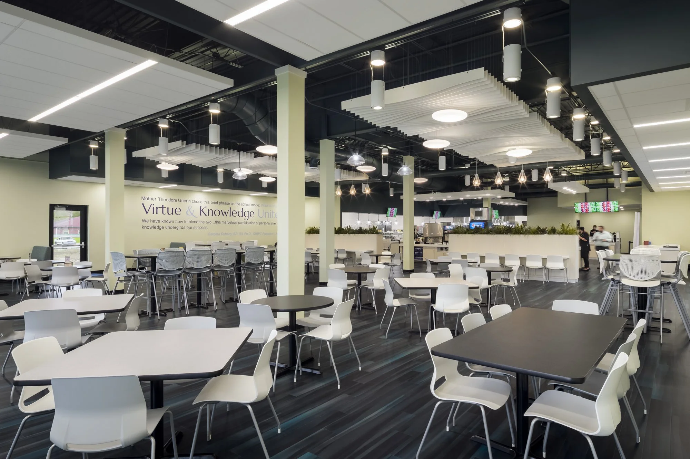
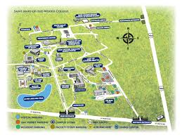

GO POMEROYS
Designed to help students on campus find things to do and make there overall college experience enjoyable. Throughout this website students can learn about the many different ways they can get involved and embrace the community at this college. Below are some spots on campus where the community thrives.
CLICK the images to see more information on how this campus spot builds community!
Le Fer Hall
Huge Dorm Building On Campus
Here you can find events taking place almost every day of the week. Around campus you can see poster with more information or check out the instagram page.
Club like FCA take place in the first floor of this building. The basement holds a student center as well for students to play games like pool, pingpong, and airhocky.
Dining Hall

Main place to eat
Good atmosphere with welcoming kitchen stafe
Variety of food for people to eat and places to sit with friends
We are always here to help students!
SMWC Address
Address: 1 St Mary of Woods Coll, St Mary-Of-The-Woods, IN 47876
Phone: (812) 535-5151
E-mail: smwc@smwc.edu
At the heart of Saint Mary-of-the-Woods College is the high quality education we bring to every learning experience. Academic Affairs believes student successes begins with a combination of theoretical and applied educational experiences delivered by our faculty that prepares our students for their chosen careers and beyond.
